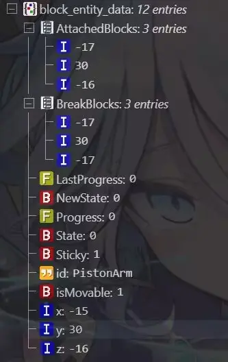
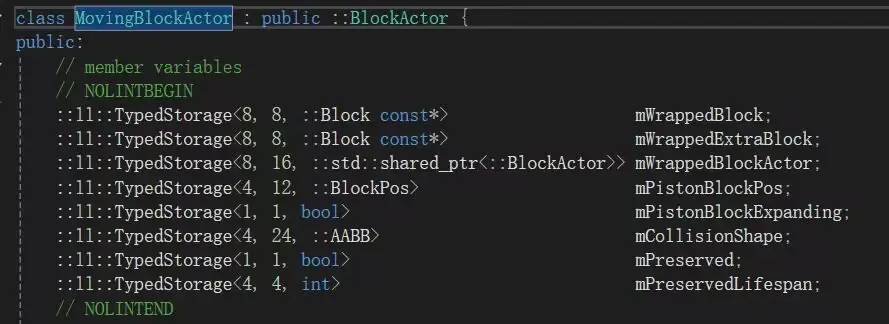
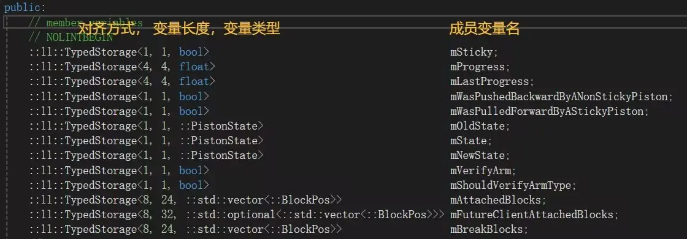

活塞-方块系统源码解析二：活塞方块实体的作用（其一）
活塞方块实体储存的内容
一、两个列表，推出列表和破坏列表（只有在决定推出时才会创建）
推出列表：活塞推动方块的坐标的一个列表（即活塞推出列表按坐标记录，这就意味着活塞可以给别的活塞生成的MB转b）
破坏列表：活塞破坏方块的坐标的一个列表（即活塞破坏列表按坐标记录）
二、记录活塞状态的标签
（state，progress，newstate，lastprogress）
1.state
state0(活塞静止时)
state1(推出)
state2(推出完成)
state3(收回)
2.newstate
newstate由红石信号决定，state根据newstate调整的而不是直接通过红石信号（也就是活塞可以在没有信号时推出，阻挡式二归就利用了这个特性）
3.progress
progress是一个浮点数，代表了活塞的推出进度，控制函数movecollidedenetity
常规情况下有
0（未推出） 对应state0
0.5（推出一半） state1或3
1（完全推出） state2
progress标签的计算规则：
当活塞为state0或3时，progress=max(progress-0.5, 0)
当活塞为state1时progress=min(progress+0.5, 1)
当活塞为state2时
progress小于1就把它变成1
4.lastprogress
上一次更新时的progress

活塞正常推出时序
0gt 红石刻 state0 活塞收到红石信号
1gt 非红石刻 state0
2gt 红石刻 state1 活塞推出
3gt 非红石刻 state1
4gt 红石刻 state2 转b
函数movecollidedentity
（这个函数的主要目的是移动被活塞推的实体，只在state1时每gt执行）：
movecollidedentity函数会遍历推出列表的每个位置，
检测那些位置往活塞推出方向前进一格的位置是不是包含空气的mb方块实体（在1.19.50是直接检测那个位置是不是mb方块实体或者包含空气的mb方块实体）
如果是就将检测的位置再生成一次mb
活塞方块实体每gt会更新一次，检查newstate标签
如果newstate是1，而state是0就推出
如果newstate是3，state是2就收回
如果决定推出或收回，就先检查是否能推出
条件有：
所有推出方块都是可以推动的，总数不超过12格以及所有推出方块（如果是可以创建方块实体的方块）的方块实体是ismovable(决定方块实体能否被推出的标签，只有推出的活塞的方块实体不能被推出)的
满足条件后，会把所有要推出方块的位置记录到推出列表里，把所有要破坏的方块的位置记录到破坏列表里
然后遍历破坏列表里的所有位置，破坏破坏列表记录的坐标的方块，
活塞破坏方块时，会先遍历破坏列表，
一个一个取出坐标并检查坐标上的方块是否有secondpart（方块的另一半）
如果有就获取secondpart的位置，破坏secondpart的位置的方块，然后再破坏破坏列表的位置的方块
（比如在0，1，0位置有一个上半门，这个位置在活塞的破坏列表里，活塞遍历破坏列表，遍历到这个坐标了，检查发现这个位置的方块是个上半门，他就获取这个上半门的secondpart位置，也就是0，0，0这个位置，然后破坏，再破坏0，1，0这个位置）
破坏完所有要破坏的方块之后
开始按推出列表记录的坐标依次推出方块
生成活塞臂方块，
然后执行函数movecollidedentity
转b时遍历列表的每个位置，再给这个位置加上推出方向的向量的位置然后转b
一些简单的魔法原理讲解：
1、移动可成为extrablock的方块
首先做一个PT堆积器延迟高草连带破坏，然后在0，0，0的位置放置一个高草，
上半草在0，1，0
下半草在0，0，0
然后把下半草打掉，放置一个可以被加入推出列表的方块，从旁边用粘液块粘住，推的时候粘走，
这时，如果活塞决定推出，
使它在0，1，0的位置记录进破坏列表
在0，0，0的位置记录进推出列表
然后活塞破坏破坏列表里的所有方块，并破坏破坏列表里的方块的secondpart的位置，也就是上半草对应的下半草的位置（0，0，0）
然后0，0，0位置的方块被破坏掉变成空气，
接下来，执行推出推出列表里的方块，
因为0，0，0的位置在推出列表里，并且那个位置是空气，所以空气会被往活塞推出方向推出一格
2、MB瞬间到位（通过a活塞给b活塞推出的mb转b）
首先有两个活塞，活塞a和活塞b，
活塞b的优先级比活塞a高
第0 gt，a活塞推出，然后用任意手法破坏掉其中的一个MB，
第1gt，在这1 gt内破坏掉那个MB也可以，总之要在a活塞执行转b之前破坏
第2gt，b活塞推出，把b活塞生成的MB推进a活塞被破坏掉的MB的位置中，然后a活塞执行推出列表里活塞方向加一的位置全部转b


笔者：樱银音
代码分析：奈茶泡芙